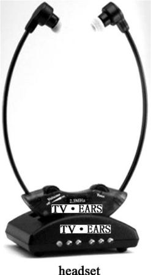

02-2015北京，B
Revolutionary TV Ears

TV Ears has helped thousands of people with various degrees of hearing loss hear the television clearly without turning up the volume(音量) and now it's better and more affordable than ever! With TV Ears wireless technology,you set your own headset volume,while other TV listeners hear the television at a volume level that's comfortable for them.You can even listen through the headset only and put the TV on mute(静音) if the situation calls for a quiet environment—maybe the baby is sleeping.Or perhaps you are the only one who is interested in listening to the ballgame.
TV Ears patented technology includes a revolutionary noise reduction ear tip,not used in any other commercially available headset.This tip reduces outside noise so that television dialogue is clear and understandable.Get the technology that has proven to help the most demanding customers.That's why TV Ears has earned the trust and confidence of audiologists(听觉学家) nationwide as well as world-famous doctors.
Doctor Recommended TV Ears!
“My wife and I have used TV Ears almost daily for the past two years and find them a great help in our enjoyment of television.As a retired ear doctor,I heartily recommend TV Ears to people with normal hearing as well as those with hearing loss.”
—Robert Forbes,M.D.,CA
Customer Recommended TV Ears!
“Now my husband can have the volume as loud as he needs and I can have the TV at my hearing level.TV Ears is so comfortable that Jack forgets he has them on!He can once again hear and understand the dialogue.”
—Darlene & Jack B.,CA
Risk Free Trial!TV Ears comes with a 30-day risk free trial.
Special Offer—Now $59.95.
If you're not satisfied,return it.
Money-back guarantee!
Call now! 800-123-7832
全部题目与逐题讲解
- A.improve your sleeping quality
- B.listen to TV without disturbing others
- C.change TV channels without difficulty
- D.become interested in ballgame programs
查看答案与讲解
答案：B
1.B 细节理解题。由第一段可知使用者可以在不打扰别人的前提下听清电视。所以B项正确。
- A.It can easily set TV on mute.
- B.Its headset volume is adjustable.
- C.It has a new noise reduction ear tip.
- D.It applies special wireless technology.
查看答案与讲解
答案：C
2.C 细节理解题。由第二段第一、二句可知这款产品与其他耳机的不同之处在于它具有减少外部噪音的小部件。
- A.using recommendations
- B.offering reasons for this invention
- C.providing statistics
- D.showing the results of experiments
查看答案与讲解
答案：A
3.A 推理判断题。在第二段下方,文章引用了医生和顾客推荐的内容,故A项正确。
本篇暂无未重复外刊。